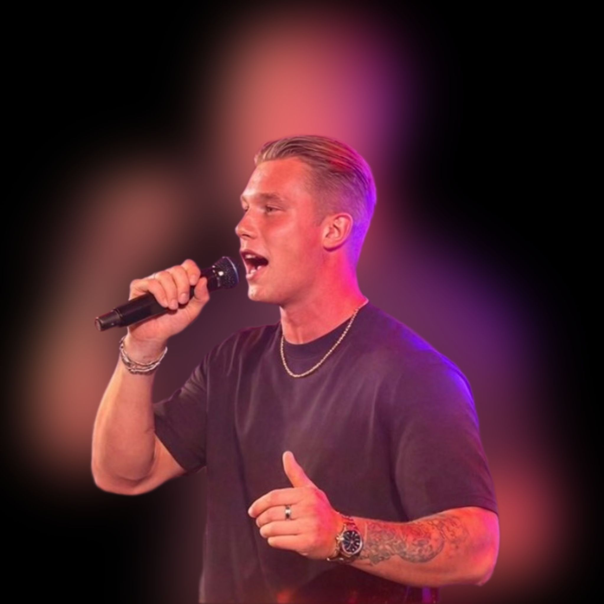
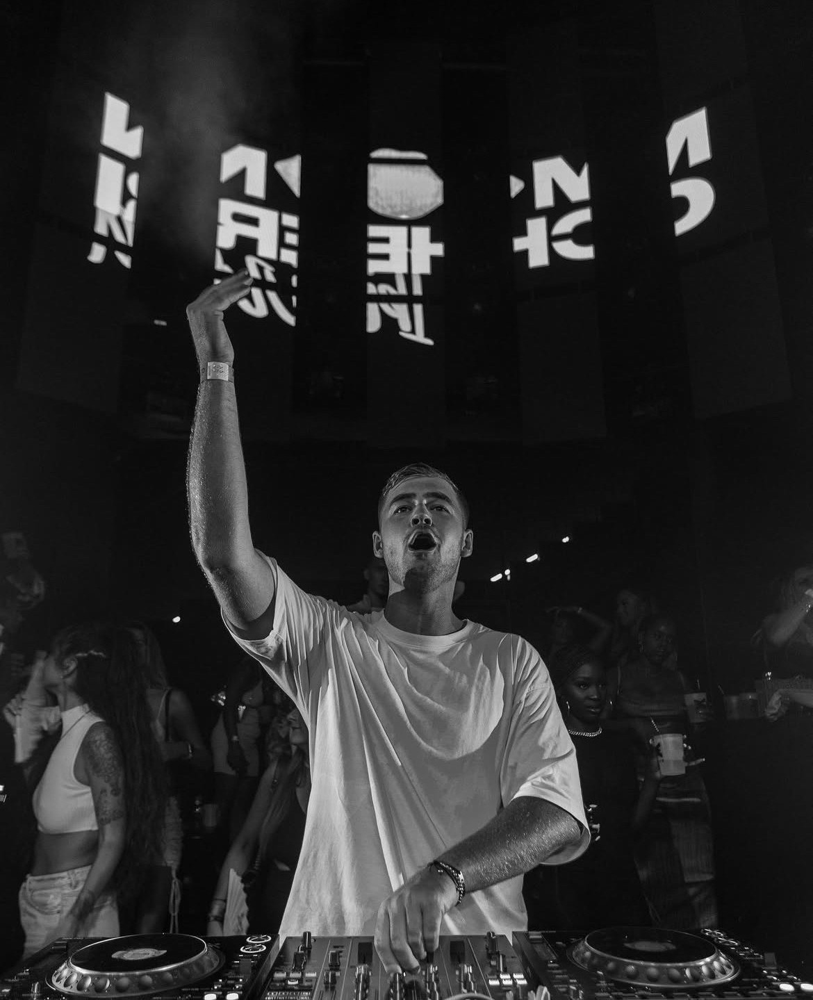

Tijdschema & Artiesten
Zaterdag
Mainstage
20:30 - 21:30

Tommy
Wordt later bekendgemaakt
21:30 - 22:00

Nick Noest
Deze Leidse zanger van 21 is dol op een feestje. Met zijn Hollandse meezingers zorgt hij voor een sfeervollle en gezellige zaterdagavond!!
22:00 - 23:30
Lucae van der Horst
Wordt later bekendgemaakt
23:30 - 00:30

Thornballin
Thornballin’ is een producer, writer en DJ met een unieke energie achter de knoppen.
Zijn track Hypnotized en shows op o.a. Ibiza en ADE maken duidelijk: dit is high-tempo Afro & house met karakter.
Altijd uplifting, altijd verrassend.